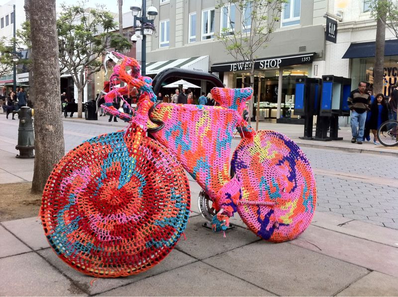

Tue, 19 Oct 2010 09:49:42 · LA · Santa Monica · bike · city
dont want your bike to get cold wrap it up in a

Don’t want your bike to get cold? Wrap it up in a nice ‘jacket’…
~Spotted in downtown Santa Monica, LA…
Tue, 19 Oct 2010 09:49:42 · LA · Santa Monica · bike · city

Don’t want your bike to get cold? Wrap it up in a nice ‘jacket’…
~Spotted in downtown Santa Monica, LA…